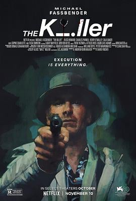

6.6
杀手
The Killer
2023
美国
评分 6.6
导演:
大卫·芬奇
演员:
迈克尔·法斯宾德 / 蒂尔达·斯文顿 / 查尔斯·帕内尔 / 索菲·夏洛特
类型:
动作,悬疑,惊悚,犯罪
剧情简介
职业杀手“他”终其一生都遵循一套冷静而刻板的规则：不偏不倚、不出错、不留下情绪。喷漆斑驳的巴黎某酒店，“目标”进入视线，他狙击已久，却因一个突如其来的动作失手。逃跑之后，他回到多米尼加的藏身处，却发现爱人在镜子前的伤口像一双冰冷的怨目——仇恨的齿轮开始转动。他背起狙击步枪，踏上复仇之旅：从新奥尔良的律师事务所转移到佛罗里达的一场夜间肉搏，再到纽约餐厅的冷对白局，最终潜入芝加哥超高层豪宅。他的步伐悄无声息，却又像风暴一般残酷。他没有声音，仅仅是冷静地向券商、代理、客户发出一连串冰冷的警告。这部影片的视觉像钢冷金属，镜头仿若猎枪的瞄准镜，对准的不是目标，而是“规则破裂”的那一瞬。与此同时，影片用沉默取代激情，用深夜的车辆尾灯替代枪火的闪光，构建出一个专业杀手在失控世界里的孤寂旅程。当他俯视芝加哥天际线，那条本该一直走下去的道路已经变成了“结束 / 重启”的岔路口。夜色、狙击、逃亡、算计——所有元素汇聚成一场无声的审判。如果你喜欢那种淡漠、精准、冷酷却在细节里爆裂的现代动作片，《杀手》将为你打开一个看似寂静，却暗藏锋芒的世界。